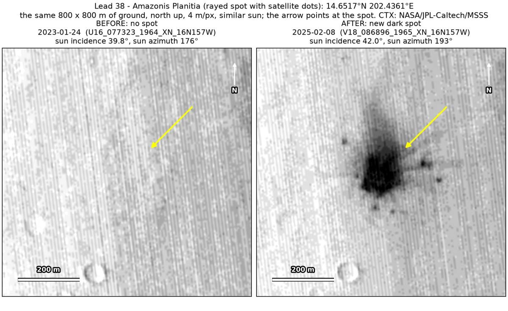
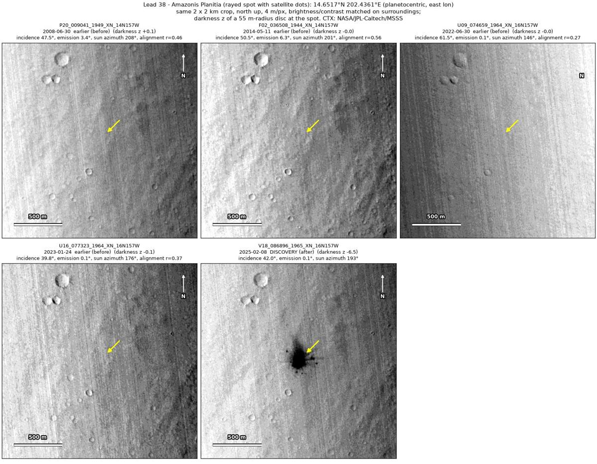
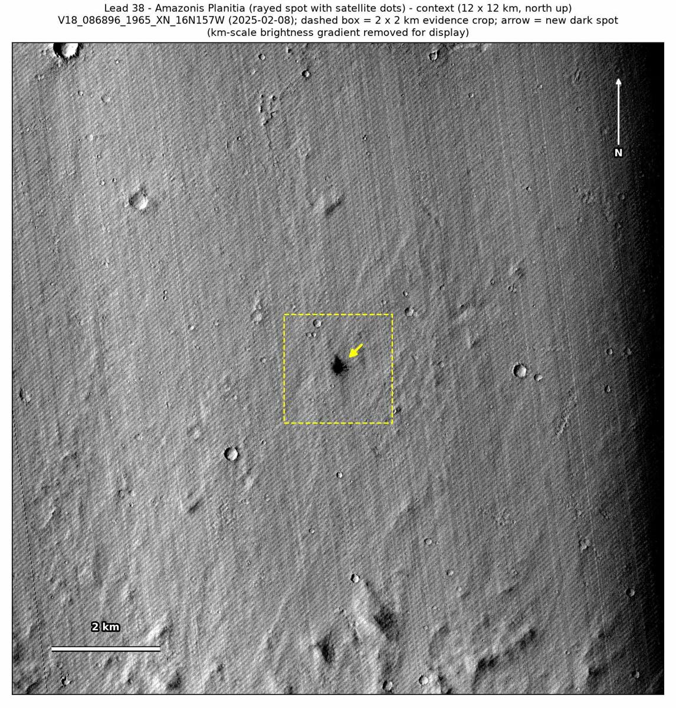

Professor of Mathematics
Paata Ivanisvili
Department of Mathematics, University of California, Irvine

← Possible new impact sites on Mars
Candidate 38: Rayed dark spot with satellite dots on Amazonis Planitia
Promising · roughly 70%

What changed. A dark spot 100 to 130 m across, with short rays and a scatter of small dark satellite dots, appeared on Amazonis Planitia between January 2023 and February 2025. It is in one CTX image so far.
Why it may be a new impact. Four earlier images, from 2008 to January 2023, show nothing there; two of them, from June 2008 and May 2014, were taken with the sun only a little lower than in the February 2025 image. Short rays and small dots arranged around a central spot, with no track, are how the blast zone of a small new crater can look, and argue against an image flaw or a dust devil.
- Location
- 14.652° N, 202.436° E (157.564° W)
- Absent
- 30 June 2008, 11 May 2014, 30 June 2022 and 24 January 2023
- Present
- 8 February 2025
- Size
- Dark spot 100 to 130 m across, with short rays and a scatter of small satellite dots
- Confidence
- Promising candidate; roughly 70% that it is a new impact.
- Caveat
- Only one image shows it, and there is no clearly dark feature nearby to prove that the earlier images would have shown it: the darkest is barely darker than its surroundings in them. It lies outside every footprint of the high-resolution HiRISE camera; the nearest ends 6.7 km away. Like every candidate here, it is unconfirmed: see the caveat.

